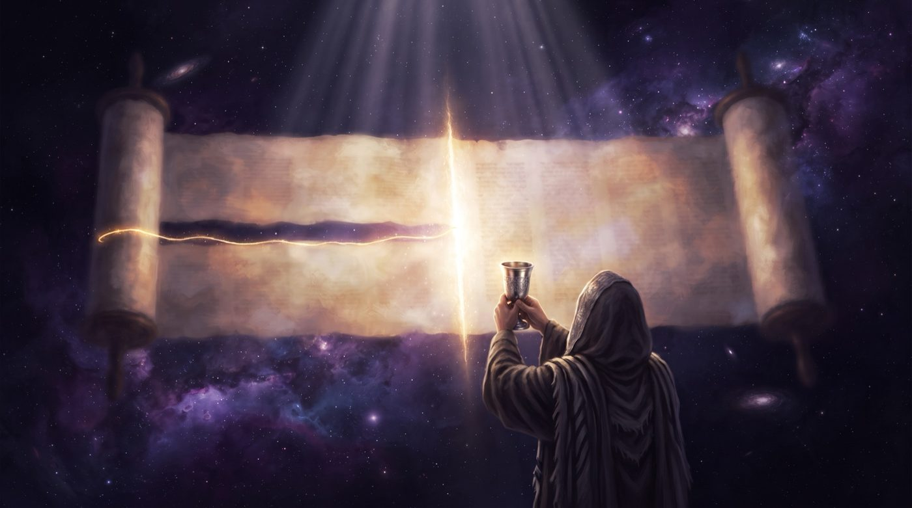
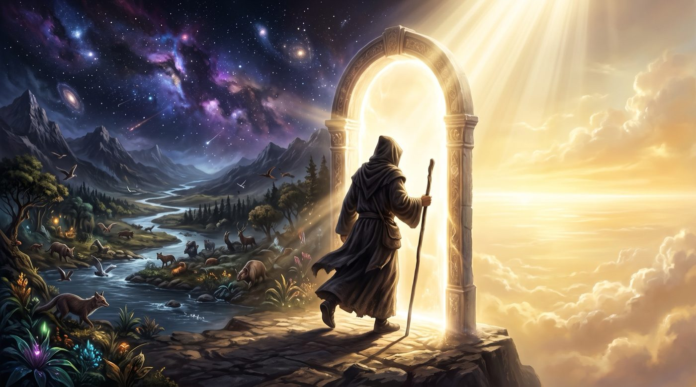

Le kidouch, ou l'homme qui achève la création
Pourquoi la sanctification de Chabbat commence à cheval sur deux paragraphes de la Torah, comment une bouche de chair peut « achever » un monde déjà terminé par le Ciel, et ce que veut dire, chaque vendredi soir, devenir l'associé de D.ieu dans l'œuvre du commencement.
Il y a, dans le kidouch du vendredi soir, une anomalie que nous ne voyons plus par habitude. Nous récitons ce texte chaque semaine, la coupe à la main, et nous ne remarquons plus par où il commence. Or il commence à un endroit très étrange. Le kidouch s'ouvre à cheval sur deux paragraphes de la Torah, à la couture même qui sépare le premier chapitre de Berechit du second, et non au début d'un paragraphe.

Le premier récit de la création s'achève sur ces mots : « וַיְהִי עֶרֶב וַיְהִי בֹקֶר יוֹם הַשִּׁשִּׁי » (Berechit 1:31), « il y eut un soir, il y eut un matin, le sixième jour ». Le paragraphe est clos. Et le kidouch prend ces derniers mots, yom hachichi, le sixième jour, puis enjambe la frontière et attrape le tout début du paragraphe suivant : « וַיְכֻלּוּ הַשָּׁמַיִם וְהָאָרֶץ וְכׇל צְבָאָם » (Berechit 2:1), « et furent achevés les cieux et la terre et toute leur armée ». Deux versets qui appartiennent à deux paragraphes différents, soudés l'un à l'autre pour ouvrir la sanctification de Chabbat. Le mot commence, pour ainsi dire, trop tôt et il déborde.
Cette couture n'est pas un hasard de mise en page. Nos maîtres1, en fixant le texte du kidouch, ont choisi de faire chevaucher la césure. Ils ont voulu que le premier mot prononcé sur la coupe soit précisément le mot de l'achèvement, vaye'houlou, et que ce mot soit arraché au récit des six jours pour ouvrir le septième. Comme si le kidouch disait, dès sa première syllabe : ce dont il est question ici, c'est de la fin de la création, du moment où l'œuvre s'achève et bascule dans le repos.
Le kidouch, dans son fond, est un témoignage. En le récitant, l'homme atteste que le monde a été créé, que D.ieu en est l'auteur, qu'il a achevé son œuvre le sixième jour et s'est reposé le septième. Nous montons à la barre, chaque vendredi soir, comme des témoins de la création. Et aussitôt une question gênante se lève. De quel droit ? L'homme n'était pas présent lors des six jours. Il a été créé en dernier, à la fin du sixième jour, quand tout était déjà là. Un témoin doit avoir vu. Nous, nous n'avons rien vu. Nous arrivons après la bataille, dans un monde déjà fini, et nous prétendons témoigner de sa fabrication.
On pourrait vouloir sauver ce témoignage par la science. L'homme moderne, dira-t-on, sait lire les lois de la nature. La précision du corps, la mécanique du vivant, l'ordre des astres, tout cela crie l'existence d'un horloger. En sondant la nature, le savant remonterait jusqu'à son auteur et pourrait, à sa façon, témoigner. Mais l'argument ne tient pas jusqu'au bout. Aucun homme ne maîtrise toutes les sciences, et même le spécialiste d'une seule, après une vie entière de recherche, ne fait qu'effleurer la surface des lois de la création. Nous sommes incapables de comprendre vraiment ce que nous prétendons attester. Le témoignage semble donc impossible pour deux raisons, et elles se cumulent : nous n'étions pas là, et nous ne comprenons pas.
Avec l'aide du Ciel et de nos maîtres, nous verrons pourquoi ce témoignage impossible est en réalité tout autre chose qu'un témoignage.
• Le kidouch : un témoignage de l'origine
• Le kidouch : sanctifier par la parole
• Le kidouch de l'homme créé en dernier
• Kidouch, le mot qui sépare et qui consacre
• Le kidouch : être témoins et acteurs de l'intromission du divin dans le monde
• Le kidouch : apporter la kedoucha de Chabbat
Vaye'houlou hachamayim veha'arets, et furent achevés les cieux et la terre. Ce mot, vaye'houlou, est un verbe de clôture, une œuvre qui se termine. Mais le Talmud y a entendu un secret qui renverse toute notre question de départ. « כׇּל הַמִּתְפַּלֵּל בְּעֶרֶב שַׁבָּת וְאוֹמֵר וַיְכֻלּוּ, מַעֲלֶה עָלָיו הַכָּתוּב כְּאִלּוּ נַעֲשָׂה שׁוּתָּף לְהַקָּדוֹשׁ בָּרוּךְ הוּא בְּמַעֲשֵׂה בְרֵאשִׁית » (Chabbat 119b), « quiconque prie la veille de Chabbat et dit vaye'houlou, l'Écriture le lui compte comme s'il était devenu associé du Saint, béni soit-Il, dans l'œuvre du commencement ».
L'homme qui récite vaye'houlou devient shoutaf, associé, partenaire du Créateur dans maasse berechit, l'œuvre de la création elle-même. Ce mot fait de lui un Associé. Il le fait entrer dans l'atelier de Berechit et lui donne une part dans l'ouvrage. Le Talmud répond en changeant la question : témoigner d'une œuvre passée n'est plus l'enjeu ; il s'agit d'y prendre part, maintenant, par la parole.
Comment un mot peut-il faire cela ? Nos maîtres l'ont fait tenir dans une lecture des lettres mêmes du verset. Le texte écrit vaye'houlou, avec le sens passif « ils furent achevés », les cieux et la terre s'achevèrent d'eux-mêmes sous la main de leur auteur. Mais on peut lire les mêmes lettres autrement, vaye'halou, au sens actif : « ils achevèrent », ils, l'homme et son Créateur, achevèrent ensemble les cieux et la terre. Un déplacement de voyelles, et le verbe passe de la création subie à la création qui se partage. En récitant vaye'houlou, l'homme se glisse dans le verbe et devient l'un des deux sujets qui achèvent le monde ; il ne décrit pas une œuvre finie sans lui.
Le mot le dit d'ailleurs par sa racine. Vaye'houlou vient de kala, achever, mener à son terme, la même racine que kalla, la fiancée, celle que l'on mène sous le dais pour parachever une union. Achever, ici, c'est moins faire cesser une chose que la conduire jusqu'à sa perfection, comme on conduit une fiancée jusqu'à son époux. La création des six jours était complète en matière, mais inachevée en sens. Il lui manquait celui qui la reconnaîtrait, la nommerait, la sanctifierait. Il lui manquait sa kalla. Et cette part de l'achèvement, le Ciel l'a laissée à l'homme.
Plutôt que de raconter la création comme un événement clos derrière nous, le kidouch nous fait saisir le mot de l'achèvement et le prononcer nous-mêmes, de sorte que, chaque vendredi soir, l'œuvre du commencement se termine à nouveau par une bouche humaine. Le premier récit se ferme sur yom hachichi, le sixième jour, l'homme y est créé au dernier instant. Le second s'ouvre sur vaye'houlou, l'achèvement, et c'est l'homme qui l'exprime. La couture entre les deux versets est le lieu exact où la création passe des mains du Ciel aux lèvres de l'homme.
Le sens simple de vaye'houlou reste le passif, « ils furent achevés ». La lecture active, vaye'halou, « ils achevèrent », est une lecture de nos maîtres, portée par le Talmud lui-même en Chabbat 119b et reprise par toute la tradition du kidouch.
Loin de témoigner d'une création achevée sans lui, celui qui récite vaye'houlou devient l'associé du Ciel qui l'achève, et le kidouch place ce mot exactement à la couture où l'œuvre passe des mains de D.ieu aux lèvres de l'homme.
Le kidouch se dit sur une coupe de vin, et il porte un nom, kidouch, sanctification. Le Ramban, dans son commentaire sur la Torah, éclaire ce nom d'une lecture qui engage tout l'homme. Sur le verset « זָכוֹר אֶת יוֹם הַשַּׁבָּת לְקַדְּשׁוֹ » (Chemot 20:8), « souviens-toi du jour du Chabbat pour le sanctifier », il s'arrête sur le mot lekadecho, pour le sanctifier, et il y entend une obligation active de l'homme.
Voici ce qu'enseigne le Ramban. Le mot lekadecho camoufle un midrach : « שנקדשהו בזכרון », que nous le sanctifiions par la mémoire, par une parole qui rappelle et proclame. Et il ajoute : « קדשהו בברכה », sanctifie-le par une bénédiction, « מכאן אמרו מקדשין על היין בכניסתו », « c'est de là qu'ils ont dit : on sanctifie sur le vin à son entrée ». Le kidouch de la coupe naît de ce seul mot, lekadecho. Sanctifier Chabbat, c'est plus que s'en souvenir en pensée : c'est le proclamer et le consacrer par une parole prononcée sur le vin, au seuil du jour.
Le Ramban compare cette sanctification à la manière dont le tribunal, le beit din, proclamait le Yovel, l'année du jubilé. Tous les cinquante ans, les juges déclaraient à voix haute « mekoudach mekoudach », sanctifié, sanctifié, et par cette seule parole l'année devenait sainte, les esclaves étaient libérés, les terres retournaient en jachères. La sainteté existait dans le calendrier, inscrite par le Ciel dans le cycle des années, mais elle attendait, pour se révéler pleinement, que des bouches humaines la proclament. De même pour Chabbat. La sainteté du septième jour existe d'en haut, elle est gravée dans le temps depuis le commencement. Mais elle attend d'être proclamée d'en bas, par la parole de l'homme sur la coupe, pour descendre et se révéler dans ce monde.
Selon le Ramban, l'homme sanctifie Chabbat activement, par sa parole, comme D.ieu lui-même sanctifia le septième jour, au lieu de simplement constater une sainteté déjà là. Le verset de la création l'écrit noir sur blanc : « וַיְבָרֶךְ אֱ-לֹהִים אֶת יוֹם הַשְּׁבִיעִי וַיְקַדֵּשׁ אֹתוֹ » (Berechit 2:3), « et D.ieu bénit le septième jour et le sanctifia ». Le Créateur a posé le premier geste de sanctification. Et il a laissé à l'homme le soin de le refaire, semaine après semaine, sur une coupe de vin. La parole du kidouch est l'écho humain de la parole divine qui, au commencement, consacra le repos.
Le kidouch relève alors de l'acte, plutôt que de la simple déclaration. L'homme prend une coupe, il ouvre la bouche, et par sa parole il fait descendre dans le temps la sainteté que le Ciel y avait déposée. Comme le beit din faisait entrer le Yovel par un mot, l'homme fait entrer Chabbat par le kidouch. La sainteté était en haut, complète, et pourtant en attente. La parole de l'homme la révèle et l'actualise en bas.
Le Ramban lit dans « pour le sanctifier » une sanctification par la parole : l'homme proclame Chabbat sur la coupe comme le tribunal proclamait le Yovel, et fait ainsi descendre d'en haut une sainteté qui attendait sa voix pour se révéler.
Mais, l'homme a été créé en dernier. Il est arrivé quand toute la création (ou presque, car la michna de Pirké Avot fait état de 10 créations ultérieures) était finie. Comment celui qui vient à la fin peut-il avoir une part dans l'ouvrage ? Nos maîtres ont retourné cette faiblesse apparente en son exact contraire.

Le Talmud pose la question « מפני מה נברא אדם בערב שבת, כדי שיכנס למצוה מיד » (Sanhedrin 38a), pour quelle raison l'homme fut-il créé la veille de Chabbat ? et y répond de plusieurs manières. Intéressons-nous à l’une d’entre elles : afin qu'il entre aussitôt dans la mitsva. L'homme a été créé en dernier dans un but précis : que sa toute première expérience, à peine ouvert les yeux, soit le Chabbat. Sa place à la fin n'a rien d'une relégation ni d'un ajout tardif au monde. La création tout entière avait été préparée pour lui, six jours d'atelier, et l'ouvrier de sens n'entre en scène qu'au moment où l'œuvre bascule dans le repos, pour que son premier acte d'homme soit d'entrer dans la sainteté du jour.
Ce placement dit ce qu'est l'homme dans l'architecture du monde. Les six jours ont produit la matière, la lumière, les eaux, les plantes, les astres, les bêtes. Tout cela est bon, le verset le répète, ki tov. Mais tout cela est muet. Rien, dans les six jours, ne peut reconnaître son auteur, le nommer, le sanctifier. Il manque une créature capable de relever la tête et de dire d'où tout cela vient. L'homme est cette créature, et il n'apparaît qu'au dernier moment, juste avant Chabbat, précisément parce que son rôle est de porter l'œuvre jusqu'à son sens et de la conduire au repos qui la couronne, plutôt que d'en être une pièce parmi d'autres.
Le Sfat Emet, sur le passage du kidouch, l'enseigne. L'homme, dit-il, composé à la fois de matière et d'esprit, est celui qui relie les six jours de la semaine au Chabbat. Nos sages enseignent qu'il fut créé en dernier afin d'entrer immédiatement dans le Chabbat, ce qui montre qu'il relie toute la création aux mondes supérieurs. La création physique s'est arrêtée à l'entrée du Chabbat, mais c'est le Chabbat lui-même qui donne à l'univers sa véritable existence, car la sainteté du septième jour, sa dimension spirituelle, est l'essence de tout ce qui a été créé. L'homme, à la jointure de la matière et de l'esprit, est le seul être qui puisse faire passer le monde des six jours dans la sainteté du septième.
Ce même Talmud ajoute pourtant un avertissement. Si l'homme a été créé en dernier, c'est un honneur, et aussi une mise en garde : « יתוש קדמך במעשה בראשית » (Sanhedrin 38a), le moustique t'a précédé dans l'œuvre du commencement. À celui qui se gonfle de sa place, on rappelle que le plus petit insecte a été créé avant lui. Le renversement tient donc en équilibre sur une condition. L'homme créé en dernier est la couronne de la création s'il en assume le rôle, s'il relie le monde à sa source, s'il le sanctifie. S'il s'en dispense, il n'est même plus le moustique, qui, lui, occupe sans faillir la place que le Ciel lui a donnée.
Rachi l'a inscrit dans le premier mot de la Torah. Berechit, il le décompose : be rechit, « pour le commencement », pour ce qui est appelé rechit, le prélude, la part de choix. Le monde a été créé pour ce qui mérite ce nom, et l'homme n'est rechit que s'il se montre digne de l'être. La grandeur s'offre au conditionnel ; elle n'est pas donnée d'avance avec la naissance. Créé en dernier, l'homme reçoit la clé du sens du monde. À lui de la tourner.
Créé en dernier, l'homme entre aussitôt dans le repos pour conduire la création à son sens : couronne de l'œuvre s'il la sanctifie, précédé par le moustique s'il s'en décharge.
La racine kadoch, saint, signifie d'abord « séparé », mis à part, avant même « pur » ou « élevé » qu’on lui attribue. Est saint ce qui est retiré de l'usage commun pour être consacré à une fin plus haute.
Le même mot dit deux choses à la fois. Kidouch est séparation et consécration, d'un seul tenant. On le voit dans le mariage. La femme devient mekoudechet, littéralement « sanctifiée », consacrée à son époux. Le mot est le même que celui du kidouch de Chabbat. Que veut-il dire ? Qu'elle est séparée du reste du monde, réservée à un seul, retirée du domaine commun, et par cette séparation même consacrée à une union unique. La séparation est la condition de la consécration, plutôt qu'un rejet. On ne se donne pleinement à l'un qu'en se retirant de tous. Dans le judaïsme, ces deux sens n'en font qu'un.
Appliquons cela à Chabbat. Sanctifier le septième jour, c'est le séparer des six autres. Le kidouch trace une frontière dans le temps : d'un côté les jours de l'ouvrage, de l'autre le jour du Chabbat. Il retire Chabbat du commun de la semaine et le consacre. Et le verset de la création avait posé le geste le premier : vayekadech oto, D.ieu sanctifia le septième jour, c'est-à-dire le sépara des six jours de l'œuvre pour en faire le jour de la bénédiction. L'homme, par le kidouch, refait cette séparation en bas. Il prend le temps, indistinct et continu, et il y grave une coupure sainte.
Or c'est exactement ce que fait la sainteté de D.ieu lui-même. Le Créateur est appelé kadoch, saint, séparé, parce qu'il est absolument au-delà du monde, transcendant. Et pourtant il agit à chaque instant dans ce monde, il le tient dans l'existence, il le renouvelle sans cesse. La tradition l'enseigne clairement : la création se renouvelle à chaque instant ; elle n'est pas un événement passé, un point unique dont le Créateur se serait ensuite écarté.
Dire que D.ieu s'est « reposé » le septième jour, c'est dire que sa présence agissante change de mode : de la création active et visible des six jours, elle passe à un mode plus séparé le septième, pour donner au monde son existence continue. À D.ieu ne plaise qu'il se soit retiré de son monde.
Ainsi kadoch dit-il à la fois séparé et présent. Le Saint est séparé du monde et pourtant l'irrigue. Séparé, donc au-dessus de tout, insaisissable ; présent, donc agissant en tout, à chaque souffle. Ces deux mots se tiennent ensemble sans se contredire.
La sainteté est cette union d'un retrait et d'une présence. Et le kidouch, dans la bouche de l'homme, imite cette sainteté : il sépare Chabbat de la semaine, et par cette séparation même il fait descendre dans la semaine une présence qui la sanctifie.
Le kidouch se révèle alors parfaitement ajusté à ce qu'il proclame. Le geste humain est taillé sur le geste divin. La coupe levée le vendredi soir refait, à la mesure d'une famille autour d'une table, ce que D.ieu fait à la mesure des mondes.
Le mot kidouch dit d'un seul tenant séparer et consacrer, comme la femme mekoudechet est retirée de tous pour être unie à un seul : sanctifier Chabbat, c'est le séparer de la semaine pour y faire descendre la présence du Saint béni soit-Il, séparé du monde et pourtant agissant en lui.
Nous demandions comment l'homme peut témoigner d'une création qu'il n'a pas vue et qu'il ne comprend pas. La réponse, à présent, est claire : le kidouch n'est pas un témoignage. C'est un acte. L'homme est convoqué à l'atelier, en ouvrier de ce qui est, non à la barre en témoin de ce qui fut.
Un témoin rapporte un fait passé qu'il a constaté. Si le kidouch était cela, il serait impossible, car nous n'avons rien constaté. Par lui, l'homme prend part à une œuvre présente ; il ne certifie pas un événement ancien. L'homme est l'acteur de la kedoucha, plutôt que son témoin.
Et sa faiblesse même devient sa fonction. Nous objections qu'il n'était pas là lors de la Création et qu'il ne la comprend pas. Mais d'un ouvrier, on demande seulement de poser sa pierre, non d'avoir assisté à la conception des plans ou de tout comprendre à la mécanique de l'ouvrage. Pour sanctifier les lois de la création, il suffit à l'homme de reconnaître qu'il y a un auteur, de vouloir cette sainteté et de la faire descendre par sa parole, sans avoir à en sonder les profondeurs. C'est la volonté qui sanctifie, plutôt que la science. Nous ne mesurons pas la portée cosmique de la création, et nous n'avons pas à la mesurer pleinement. Nous attestons qu'elle vient d'une volonté, et par notre propre volonté nous en prolongeons la sainteté dans le temps.
Dès lors, chaque kidouch est un chantier, plutôt qu'une commémoration de la Genèse. À l'instant où l'homme lève la coupe et prononce vaye'houlou, la création s'achève encore une fois par ses lèvres, et la sainteté du septième jour redescend dans le monde par sa voix. Le monde n'est pas fini une fois pour toutes derrière nous. Il s'achève de nouveau chaque semaine, et il attend, pour cela, une bouche humaine.
Une famille se rassemble, fatiguée d'une semaine, autour d'une table éclairée de bougies. On lève une coupe, on dit quelques versets. Rien, en apparence, n'a de dimension cosmique. Et pourtant, à travers ces mots, l'homme reprend l'outil du commencement, s'associe au Créateur, sépare et consacre le temps, fait descendre la sainteté d'en haut. Le plus humble kidouch, dans la plus simple maison, refait à sa mesure le geste par lequel le monde reçoit son sens.
Le kidouch est un acte accessible plutôt qu'un témoignage impossible : sans avoir vu la création, l'homme la sanctifie par sa volonté et sa parole, et devient l'acteur de la kedoucha là où il se croyait seulement témoin.
Que nous demande, concrètement, ce kidouch qui fait de nous des associés du commencement ? Il nous demande de tenir ensemble deux choses que nous croyons opposées : être pleinement dans ce monde, et en même temps totalement séparés de lui.
Chaque vendredi soir, l'homme est convoqué à ce point d'équilibre. Il est plongé dans le matériel : une table dressée, des mets savoureux, du vin, de beaux habits, la joie des siens, la fatigue d'une semaine de labeur. Le plaisir de Chabbat, le oneg Chabbat, est lui-même une mitsva, un commandement de profiter de ce monde. Et pourtant, au moment du kidouch, ce même homme se sépare. Il sépare ce jour des autres, il retire cette table du commun, il consacre ce plaisir à une fin plus haute. Il est dedans et dehors à la fois. Il goûte le monde et le sanctifie.
Comme la femme mekoudechet, séparée de tous et unie à un seul, l'homme de Chabbat est appelé à s'engager dans le monde tout en le consacrant, sans le fuir ni s'y noyer. Manger, boire, se réjouir, mais en sanctifiant chaque plaisir, en le rapportant à sa source. Être acteur du monde matériel et, dans le même mouvement, en être séparé, parce que rattaché à une réalité spirituelle plus haute. Le kidouch fait passer le profane dans le sacré, sans les opposer.
On enseigne qu'il est interdit de manger le samedi matin avant d'avoir prié. Prie-t-on afin de pouvoir manger, ou mange-t-on afin de pouvoir mieux prier ? L'ordre des priorités décide de tout. Celui qui prie pour pouvoir enfin passer à table a fait de la prière un péage vers le plaisir. Celui qui mange pour avoir la force de mieux servir a fait du plaisir un tremplin vers le sens. Le même repas, selon l'intention qui le porte, abaisse ou élève.
La vie tout entière se joue sur cette bascule. Nous passons nos jours dans la matière, le travail, l'argent, le corps, les besoins. Rien de tout cela n'est méprisable ; le monde a été créé bon, ki tov, et le refuser serait mépriser l'œuvre du Créateur. Mais tout cela attend d'être séparé et consacré, faute de quoi il retombe en simple pesanteur. L'homme qui traverse la semaine sans jamais rien consacrer vit dans un monde muet, où les choses ne renvoient qu'à elles-mêmes. L'homme qui sait, ne fût-ce qu'un instant chaque semaine, lever une coupe et séparer le sacré du profane, fait entrer du sens dans la matière et se tient, lui aussi, à la jointure des six jours et du septième.
Chaque vendredi soir nous convoque au point d'équilibre de la sainteté : être pleinement dans le monde et pourtant séparés de lui, goûter le plaisir de ce monde tout en le consacrant, en acteurs qui font passer le profane dans le sacré.
Si chaque kidouch achève un peu la création et fait descendre un peu de sainteté dans le temps, alors l'histoire elle-même est un long kidouch en train de se dire, un monde qui apprend, semaine après semaine, à séparer le sacré du profane et à conduire la matière vers son sens. Chaque vendredi soir, une coupe de plus est levée, une frontière de plus est tracée entre l'ouvrage et le repos, une part de plus du monde est consacrée. Le grand achèvement se prépare de kidouch en kidouch.
La tradition l'a dit dans une seule expression, cachée par le kabbaliste Chlomo Alkabetz au cœur du Le'ha Dodi que nous chantons pour accueillir Chabbat : sof maasse bema'hachava te'hila, « dernier dans l'action, premier dans la pensée ». Chabbat fut créé en dernier et pensé en premier. Il est venu à la fin des six jours, mais il était le but dès l'origine, la pensée première de toute l'œuvre. Il en va de même de la fin des temps. Le monde qui vient, tout entier sanctifié, tout entier repos, est le dernier dans l'ordre du déroulement, mais il fut le premier dans l'intention du Créateur. Nous marchons vers lui, et sans le savoir, chaque kidouch en pose une pierre.
Nos maîtres nomment le monde à venir yom chekoulo Chabbat, le jour qui est tout entier Chabbat. C'est l'aboutissement de ce que le kidouch annonce chaque semaine : un temps entier devenu Chabbat, une création tout entière conduite à son repos et à sa sainteté, par-delà le seul septième jour séparé des six autres. Le jour où l'homme aura pleinement joué son rôle d'associé du commencement, où toute la matière aura été séparée et consacrée, où plus rien ne restera muet dans le monde, ce jour-là la création sera enfin achevée pour de bon, et le grand vaye'houlou de la fin répondra au vaye'houlou du début. Alors le monde entier sera kidouch, séparé pour être uni, retiré du commun pour être tout entier consacré à son Créateur.
| וַיְבָרֶךְ אֱ-לֹהִים אֶת יוֹם הַשְּׁבִיעִי וַיְקַדֵּשׁ אֹתוֹ כִּי בוֹ שָׁבַת מִכׇּל מְלַאכְתּוֹ | Et D.ieu bénit le septième jour et le sanctifia, car en lui Il se reposa de toute Son œuvre (Berechit 2:3) |
|---|
Chabbat Chalom !
Par B.A., à Saint-Mandé, Tichri 5786 / octobre 2025
Puisse être la volonté du Ciel que nous sachions, chaque vendredi soir, lever la coupe en associés d'une création qui s'achève encore par nos lèvres, et non en simples témoins d'une œuvre passée.
Et puissions-nous mériter bientôt le jour qui est tout entier Chabbat, où toute la terre sera séparée et consacrée, et où le grand achèvement de la fin répondra à l'achèvement du commencement.
| Torah | Talmud |
|---|---|
| Berechit 1:31, yom hachichi, la clôture du sixième jour ; Berechit 2:1-3, vaye'houlou et vayekadech oto, l'achèvement et la sanctification du septième jour ; Chemot 20:8, za'hor et yom haChabbat lekadecho, le commandement de sanctifier Chabbat. | Chabbat 119b, celui qui récite vaye'houlou devient associé du Saint, béni soit-Il, dans l'œuvre du commencement ; Sanhedrin 38a, l'homme créé en dernier pour entrer aussitôt dans la mitsva, et le moustique qui le précède. |
| Michna et Rishonim | Mystique et Hassidout |
| Avot 5:1, le monde créé par dix paroles ; Avot 5:6, les dix choses créées au crépuscule de la veille de Chabbat ; Rachi sur Berechit 1:1, be-rechit, « pour le commencement » ; le Ramban sur Chemot 20:8, sanctifier Chabbat bizkaron et bivra'ha, sur le vin, comme le beit din proclamant le Yovel. | Le Sfat Emet sur le kidouch, l'homme qui relie les six jours au Chabbat et donne au monde son existence véritable (Sfat Emet, Berechit 5638) ; le Le'ha Dodi de Rabbi Chlomo Alkabetz, sof maasse bema'hachava te'hila ; le double sens de kidouch, séparation et consécration, comme la mekoudechet. |
En réalité, selon la hala'ha, le kidouch commence à *vaye'houlou* (Choul'han Arou'h, Ora'h 'Hayim 271:10) ; ouvrir par *yom hachichi* est un usage.↩︎